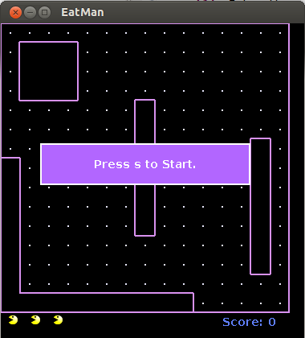

We are creating a 2D game where the character will automatically run but you
ultimately have control of which direction the character will go. The user will use the arrow keys on the keyboard to control the direction of the character. The player will
have to escape from multiple enemies (ghosts) and will have to collect points to go onto the next level. If touched by the enemies, the character will die. The character will have three extra lives until the game stops. If all of the points (the dots) are collected, the user will move on to the next level. The next level will have enemies that have faster speed.
Some of the other graphics will be taken from games.

Will support upcoming versions of Java.
Unknown words
Group Members
Crystale , Dericka, Imani, Connie